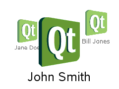

PathView
Lays out model-provided items on a path More...
Inherits Item
Properties
- cacheItemCount : int
- count : int
- currentIndex : int
- currentItem : int
- delegate : Component
- dragMargin : real
- dragging : bool
- flickDeceleration : real
- flicking : bool
- highlight : Component
- highlightItem : Item
- highlightMoveDuration : int
- highlightRangeMode : enumeration
- interactive : bool
- maximumFlickVelocity : real
- model : model
- moving : bool
- offset : real
- path : Path
- pathItemCount : int
- preferredHighlightBegin : real
- preferredHighlightEnd : real
- snapMode : enumeration
Attached Properties
- isCurrentItem : bool
- onPath : bool
- view : PathView
Signals
Methods
- Item itemAt(int x, int y)
- decrementCurrentIndex()
- incrementCurrentIndex()
- int indexAt(int x, int y)
- positionViewAtIndex(int index, PositionMode mode)
Detailed Description
A PathView displays data from models created from built-in QML types like ListModel and XmlListModel, or custom model classes defined in C++ that inherit from QAbstractListModel.
The view has a model, which defines the data to be displayed, and a delegate, which defines how the data should be displayed. The delegate is instantiated for each item on the path. The items may be flicked to move them along the path.
For example, if there is a simple list model defined in a file ContactModel.qml like this:
import QtQuick 2.0 ListModel { ListElement { name: "Bill Jones" icon: "pics/qtlogo.png" } ListElement { name: "Jane Doe" icon: "pics/qtlogo.png" } ListElement { name: "John Smith" icon: "pics/qtlogo.png" } }
This data can be represented as a PathView, like this:
import QtQuick 2.0 Rectangle { width: 240; height: 200 Component { id: delegate Column { id: wrapper Image { anchors.horizontalCenter: nameText.horizontalCenter width: 64; height: 64 source: icon } Text { id: nameText text: name font.pointSize: 16 color: wrapper.PathView.isCurrentItem ? "red" : "black" } } } PathView { anchors.fill: parent model: ContactModel {} delegate: delegate path: Path { startX: 120; startY: 100 PathQuad { x: 120; y: 25; controlX: 260; controlY: 75 } PathQuad { x: 120; y: 100; controlX: -20; controlY: 75 } } } }

(Note the above example uses PathAttribute to scale and modify the opacity of the items as they rotate. This additional code can be seen in the PathAttribute documentation.)
PathView does not automatically handle keyboard navigation. This is because the keys to use for navigation will depend upon the shape of the path. Navigation can be added quite simply by setting focus to true and calling decrementCurrentIndex() or incrementCurrentIndex(), for example to navigate using the left and right arrow keys:
PathView { // ... focus: true Keys.onLeftPressed: decrementCurrentIndex() Keys.onRightPressed: incrementCurrentIndex() }
The path view itself is a focus scope (see Keyboard Focus in Qt Quick for more details).
Delegates are instantiated as needed and may be destroyed at any time. State should never be stored in a delegate.
PathView attaches a number of properties to the root item of the delegate, for example PathView.isCurrentItem. In the following example, the root delegate item can access this attached property directly as PathView.isCurrentItem, while the child nameText object must refer to this property as wrapper.PathView.isCurrentItem.
Component { id: delegate Column { id: wrapper Image { anchors.horizontalCenter: nameText.horizontalCenter width: 64; height: 64 source: icon } Text { id: nameText text: name font.pointSize: 16 color: wrapper.PathView.isCurrentItem ? "red" : "black" } } }
Note that views do not enable clip automatically. If the view is not clipped by another item or the screen, it will be necessary to set clip: true in order to have the out of view items clipped nicely.
See also Path and PathView example.
Property Documentation
cacheItemCount : int |
This property holds the maximum number of items to cache off the path.
For example, a PathView with a model containing 20 items, a pathItemCount of 10, and an cacheItemCount of 4 will create up to 14 items, with 10 visible on the path and 4 invisible cached items.
The cached delegates are created asynchronously, allowing creation to occur across multiple frames and reducing the likelihood of skipping frames.
Setting this value can improve the smoothness of scrolling behavior at the expense of additional memory usage. It is not a substitute for creating efficient delegates; the fewer objects and bindings in a delegate, the faster a view can be moved.
See also pathItemCount.
count : int |
This property holds the number of items in the model.
currentIndex : int |
This property holds the index of the current item.
currentItem : int |
This property holds the current item in the view.
delegate : Component |
The delegate provides a template defining each item instantiated by the view. The index is exposed as an accessible index property. Properties of the model are also available depending upon the type of Data Model.
The number of objects and bindings in the delegate has a direct effect on the flicking performance of the view when pathItemCount is specified. If at all possible, place functionality that is not needed for the normal display of the delegate in a Loader which can load additional components when needed.
Note that the PathView will layout the items based on the size of the root item in the delegate.
Here is an example delegate:
Component { id: delegate Column { id: wrapper Image { anchors.horizontalCenter: nameText.horizontalCenter width: 64; height: 64 source: icon } Text { id: nameText text: name font.pointSize: 16 color: wrapper.PathView.isCurrentItem ? "red" : "black" } } }
dragMargin : real |
This property holds the maximum distance from the path that initiate mouse dragging.
By default the path can only be dragged by clicking on an item. If dragMargin is greater than zero, a drag can be initiated by clicking within dragMargin pixels of the path.
dragging : bool |
This property holds whether the view is currently moving due to the user dragging the view.
flickDeceleration : real |
This property holds the rate at which a flick will decelerate.
The default is 100.
flicking : bool |
This property holds whether the view is currently moving due to the user flicking the view.
highlight : Component |
This property holds the component to use as the highlight.
An instance of the highlight component will be created for each view. The geometry of the resultant component instance will be managed by the view so as to stay with the current item.
The below example demonstrates how to make a simple highlight. Note the use of the PathView.onPath attached property to ensure that the highlight is hidden when flicked away from the path.
Component { Rectangle { visible: PathView.onPath // ... } }
See also highlightItem and highlightRangeMode.
highlightItem : Item |
highlightMoveDuration : int |
This property holds the move animation duration of the highlight delegate.
If the highlightRangeMode is StrictlyEnforceRange then this property determines the speed that the items move along the path.
The default value for the duration is 300ms.
interactive : bool |
maximumFlickVelocity : real |
This property holds the approximate maximum velocity that the user can flick the view in pixels/second.
The default value is platform dependent.
This property holds the model providing data for the view.
The model provides a set of data that is used to create the items for the view. For large or dynamic datasets the model is usually provided by a C++ model object. Models can also be created directly in QML, using the ListModel type.
Note: changing the model will reset the offset and currentIndex to 0.
See also Data Models.
moving : bool |
This property holds whether the view is currently moving due to the user either dragging or flicking the view.
offset : real |
The offset specifies how far along the path the items are from their initial positions. This is a real number that ranges from 0.0 to the count of items in the model.
path : Path |
This property holds the path used to lay out the items. For more information see the Path documentation.
pathItemCount : int |
This property holds the number of items visible on the path at any one time.
Setting pathItemCount to undefined will show all items on the path.
preferredHighlightBegin : real |
preferredHighlightEnd : real |
highlightRangeMode : enumeration |
These properties set the preferred range of the highlight (current item) within the view. The preferred values must be in the range 0.0-1.0.
If highlightRangeMode is set to PathView.NoHighlightRange
If highlightRangeMode is set to PathView.ApplyRange the view will attempt to maintain the highlight within the range, however the highlight can move outside of the range at the ends of the path or due to a mouse interaction.
If highlightRangeMode is set to PathView.StrictlyEnforceRange the highlight will never move outside of the range. This means that the current item will change if a keyboard or mouse action would cause the highlight to move outside of the range.
Note that this is the correct way to influence where the current item ends up when the view moves. For example, if you want the currently selected item to be in the middle of the path, then set the highlight range to be 0.5,0.5 and highlightRangeMode to PathView.StrictlyEnforceRange. Then, when the path scrolls, the currently selected item will be the item at that position. This also applies to when the currently selected item changes - it will scroll to within the preferred highlight range. Furthermore, the behaviour of the current item index will occur whether or not a highlight exists.
The default value is PathView.StrictlyEnforceRange.
Note that a valid range requires preferredHighlightEnd to be greater than or equal to preferredHighlightBegin.
snapMode : enumeration |
This property determines how the items will settle following a drag or flick. The possible values are:
- PathView.NoSnap (default) - the items stop anywhere along the path.
- PathView.SnapToItem - the items settle with an item aligned with the preferredHighlightBegin.
- PathView.SnapOneItem - the items settle no more than one item away from the item nearest preferredHighlightBegin at the time the press is released. This mode is particularly useful for moving one page at a time.
snapMode does not affect the currentIndex. To update the currentIndex as the view is moved, set highlightRangeMode to PathView.StrictlyEnforceRange (default for PathView).
See also highlightRangeMode.
Attached Property Documentation
PathView.isCurrentItem : bool |
This attached property is true if this delegate is the current item; otherwise false.
It is attached to each instance of the delegate.
This property may be used to adjust the appearance of the current item.
Component { id: delegate Column { id: wrapper Image { anchors.horizontalCenter: nameText.horizontalCenter width: 64; height: 64 source: icon } Text { id: nameText text: name font.pointSize: 16 color: wrapper.PathView.isCurrentItem ? "red" : "black" } } }
PathView.onPath : bool |
This attached property holds whether the item is currently on the path.
If a pathItemCount has been set, it is possible that some items may be instantiated, but not considered to be currently on the path. Usually, these items would be set invisible, for example:
Component { Rectangle { visible: PathView.onPath // ... } }
It is attached to each instance of the delegate.
This attached property holds the view that manages this delegate instance.
It is attached to each instance of the delegate.
Signal Documentation
This handler is called when the user stops dragging the view.
If the velocity of the drag is suffient at the time the touch/mouse button is released then a flick will start.
This handler is called when the view starts to be dragged due to user interaction.
This handler is called when the view is flicked. A flick starts from the point that the mouse or touch is released, while still in motion.
This handler is called when the view stops moving due to user interaction. If a flick was generated, this handler will be triggered once the flick stops. If a flick was not generated, the handler will be triggered when the user stops dragging - i.e. a mouse or touch release.
This handler is called when the view begins moving due to user interaction.
Method Documentation
Returns the item containing the point x, y in content coordinates. If there is no item at the point specified, null is returned.
Note: methods should only be called after the Component has completed.
Decrements the current index.
Note: methods should only be called after the Component has completed.
Increments the current index.
Note: methods should only be called after the Component has completed.
Returns the index of the item containing the point x, y in content coordinates. If there is no item at the point specified, -1 is returned.
Note: methods should only be called after the Component has completed.
PathView::positionViewAtIndex(int index, PositionMode mode) |
Positions the view such that the index is at the position specified by mode:
- PathView.Beginning - position item at the beginning of the path.
- PathView.Center - position item in the center of the path.
- PathView.End - position item at the end of the path.
- PathView.Contain - ensure the item is positioned on the path.
- PathView.SnapPosition - position the item at preferredHighlightBegin. This mode is only valid if highlightRangeMode is StrictlyEnforceRange or snapping is enabled via snapMode.
Note: methods should only be called after the Component has completed. To position the view at startup, this method should be called by Component.onCompleted. For example, to position the view at the end:
Component.onCompleted: positionViewAtIndex(count - 1, PathView.End)